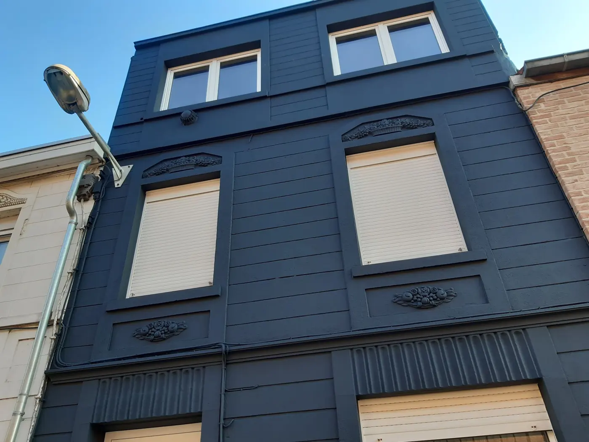
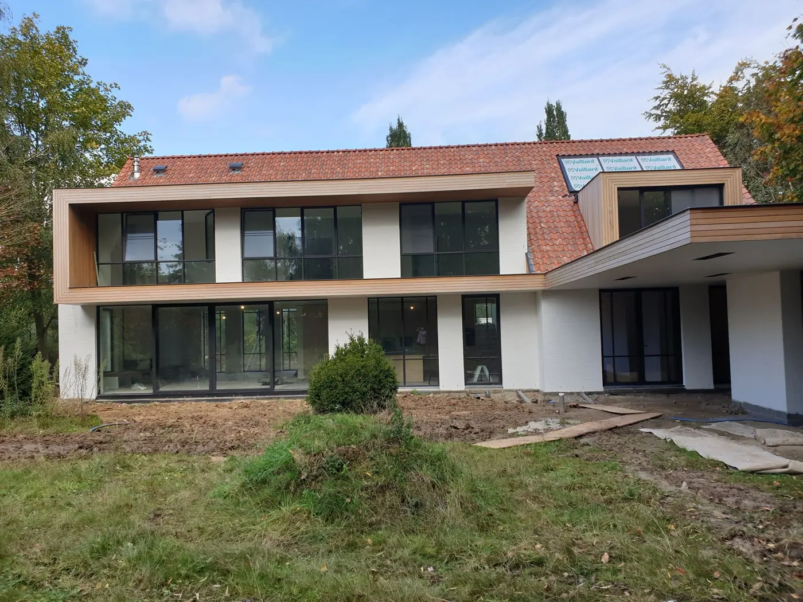
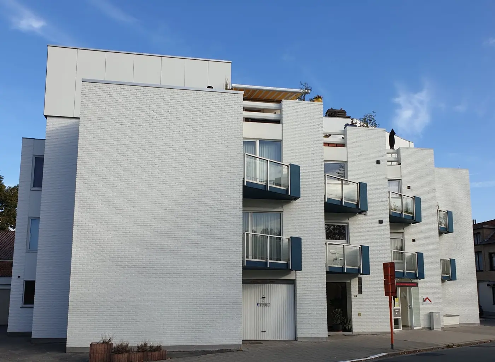

Buiten- & binnenschilderwerken kasteel Blauwhuis te Izegem
Over deze realisatie
Een prestigeproject in de kijker!
Op 04/05/20 zijn wij in opdracht van Urbes gestart met de schilderwerken van de Izegemse historische parel, het Blauwhuis kasteel.
Benieuwd naar hoe wij dit zullen aanpakken?
Volg onze SDAD facebookpagina voor verdere verwikkelingen, ook via onze website zal de evolutie van de werken te volgen zijn.
Tevens kan je ook terecht op de facebookpagina Kasteel Blauwhuis om alle restauraties alsook de volledige geschiedenis van het kasteel te bekijken.
Restauratie en herbestemming van het kasteel
Urbes kocht het leegstaande kasteel Blauwhuis op en zijn volop bezig met de belangrijkste instandhoudingswerken om over te gaan tot de restauratie en herbestemming van het kasteel.
Zo zijn onder andere verstevigingswerken in de rotonde van het kasteel bezig zodat de balken van de koepel weg kunnen. De zoldervloeren zullen worden behandeld tegen de houtklopkever en huiszwam. Het isoleren van de draagstructuur en de restauratie van het dak staan ondermeer op het programma.
Het grootste deel van de huidge verf wordt volledig verwijderd van de gevels. Ramen, dakkapellen, bakgoten worden hersteld of volledig vernieuwd. Dit alles zorgt voor heel wat schilderwerk, een geuse opdracht die SDAD in volle vertrouwen toegewezen kreeg van Urbes. We mogen toch stellen dat dit een prestige project zal worden en voor een mooie referentie zal zorgen op ons palmares.
Voor de invulling van het kasteel wordt er gemikt op een mix van kantoren, een restaurant en een brasserie.
- Bouwheer: Urbes
- Aannemer:Bouwbedrijf Romel & JMA Group ( waarvan Romel NV en Ubes Bv zusters zijn)
Sfeerbeelden
Sfeerbeelden
Meer realisaties
 Buiten
BuitenGevel villa te Knokke

BuitenMake-over voorgevel te Izegem
 Buiten
BuitenKaleien van achtergevel te Kortrijk

BuitenKaleien gevel van villa te Kortrijk
 Buiten
BuitenSchilderen gevel bungalow te Marke
 Buiten
BuitenSchilderen gevel te Kortrijk
 Binnen · Buiten
Binnen · BuitenBabu@Gent

BuitenResidentie Kolleblomme te Roeselare in een kaleien jasje
Een mooi resultaat begint met een goed gesprek.
Tijdens een vrijblijvend plaatsbezoek luisteren we naar uw wensen, geven we professioneel advies en bekijken we samen de mogelijkheden voor uw schilderwerken of interieurafwerking.
Na het vrijblijvende plaatsbezoek ontvangt u een duidelijke offerte en planning. Liever eerst een vraag stellen? Contacteer ons.